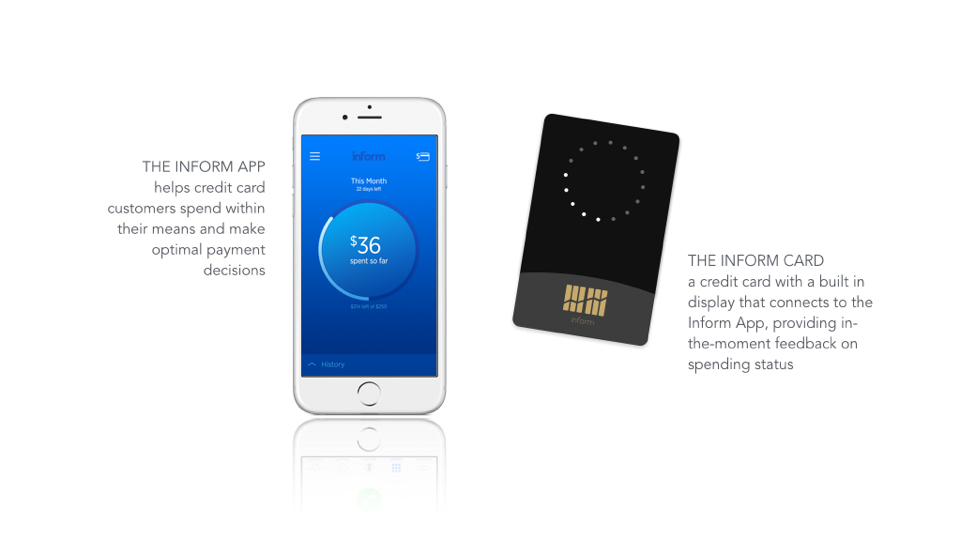
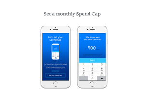
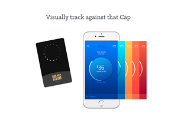
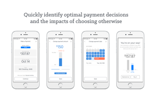
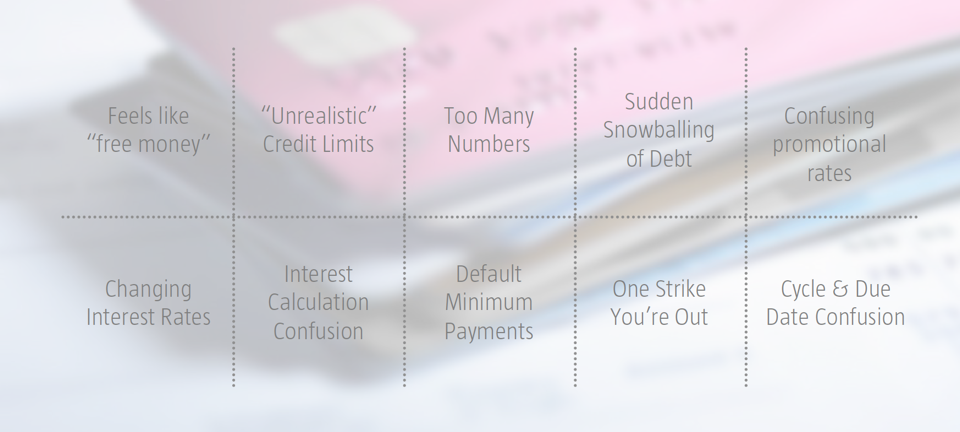

INFORM, CAPITAL ONE LABS / 2015
Inform is a credit card management tool that helps people who are new to credit overcome the common barriers that prevent them from managing their cards wisely. The MVP consists of an app that connects to a Bluetooth-enabled credit card with a built-in display.
When people first download Inform, they are prompted to set a monthly Spend Cap for their credit card. Throughout the month, both the app and card give them visual, real-time feedback on how much they spend towards this Cap. When it’s time to pay, Inform guides them to healthy payment decisions.
Today, the Inform app version 1.0 is live in the App Store and on Google Play (check out the microsite) and the card just finished its first hi-fidelity internal pilot.
   {kind=link}
{kind=link}
{kind=link}
{kind=link}
Background & Approach
The Mainstreet Card line of business at Capital One engaged my team in the Lab to help them explore how we, as a company, could help people use credit wisely. We knew there were many directions we could take, so we started wide and took a highly empathetic approach, interviewing a diverse group of 30+ people to understand their journeys with credit. Over time, we narrowed to a set of opportunity spaces that led us to a multitude of potential solutions, which ultimately sparked the vision for the Inform platform.
{kind=link}
{kind=link}
{kind=link}
{kind=link}
{kind=link}
{kind=link}
Problem
The four opportunity areas we found were ripe with problems preventing people from using credit wisely.
- The transfer of knowledge and values
When it comes to credit, it’s pertinent that people learn about it from an early age. Parents aren’t great at teaching these skills effectively, which results in their kids getting into trouble. - Inherent product flaws
Credit cards are inherently confusing, difficult to manage, and can be destructive if used improperly. - Limited “Slack”
Many people don’t have room in their financial ecosystems for mistakes or unexpected events. - A negative emotional relationship with money
Whether it’s due to pride, lack of trust, or a passive attitude, some people just don’t have good relationships with money. This can lead to unhealthy credit behaviors.
All of these areas presented huge opportunity, but our rapid prototyping and research led us to focus on the root cause: inherent product flaws.
{kind=link}
The flawed way that credit cards are designed today can easily lead the in-experienced down a path to long-term destruction. Our team felt strongly that if we focused on solving this root problem, we could instead lead people to build healthy behaviors from the start, which we hoped would result in their long-term success with credit. This ultimately led us to our project mission and the Inform platform as a way to solve this problem.

Project Mission
To reimagine the first-time card experience for people who are new and inexperienced with credit. Seek to give them control of their credit journey, from the start, so they can use their credit cards with wisdom and confidence.
Project status
Both the Inform app and card are MVPs currently being incubated in the Lab as experiments to see how well they accomplish this mission. As of December 2015, the app had 19,000 users and the card had just finished its first pilot with 50 internal participants. Results thus far are trending positive, however there’s still quantitative and qualitative research to be done to validate if it’s actually working.

My Contributions & Team Makeup
I was the design lead throughout the life of the project from the early empathy research to design iteration to production work with the developers. Throughout the project, I worked with a fantastic team of product managers, developers, and design researchers. My involvement included leading the following:
- Exploratory, generative, and evaluative research
- Ideation & prototyping
- Strategy, storytelling, and vision work
- Interaction, visual, and production design
- Video production and animation